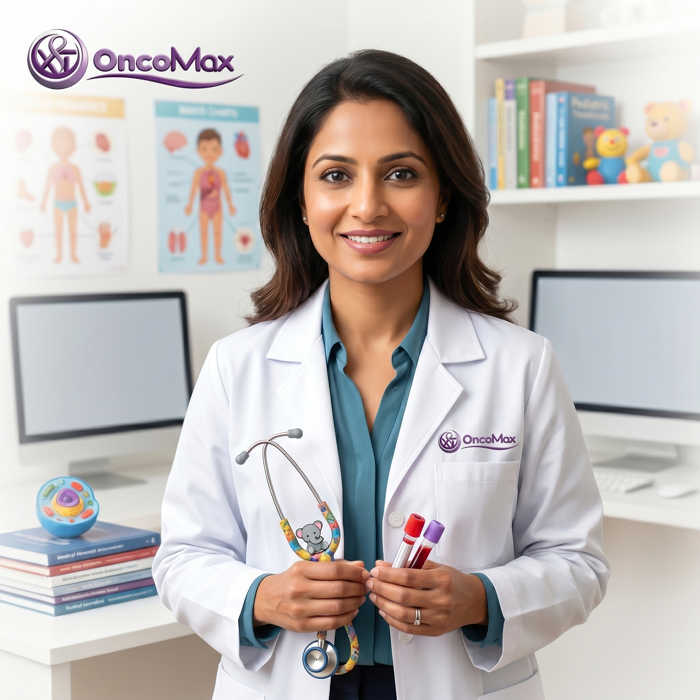
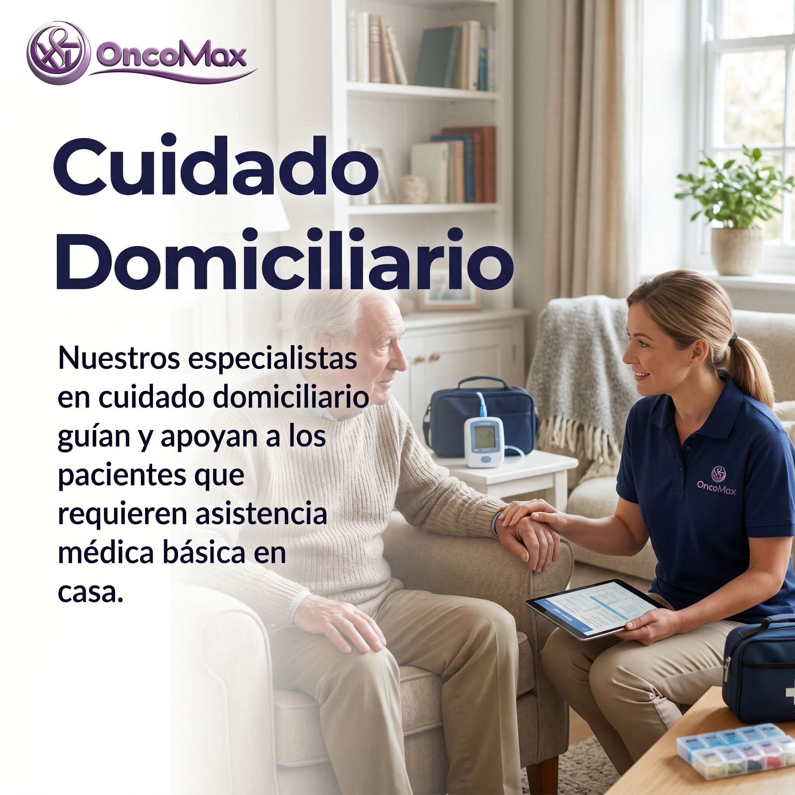

Oncologo pediatrico
Atencion especializada para niños y adolescentes con sospecha o diagnostico de cancer.
Reservar consultaAtencion medica y acompañamiento integral para pacientes y familias.

Atencion especializada para niños y adolescentes con sospecha o diagnostico de cancer.
Reservar consultaEvaluacion y tratamiento quirurgico de tumores, con coordinacion del equipo medico.
Reservar consulta
Apoyo medico, emocional y familiar durante diagnostico, tratamiento y recuperacion.
Reservar consulta